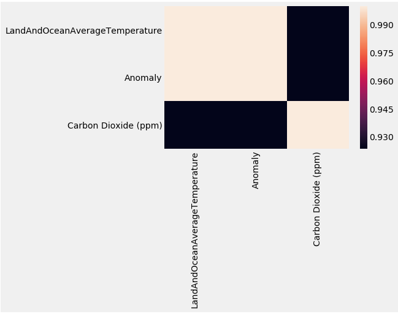
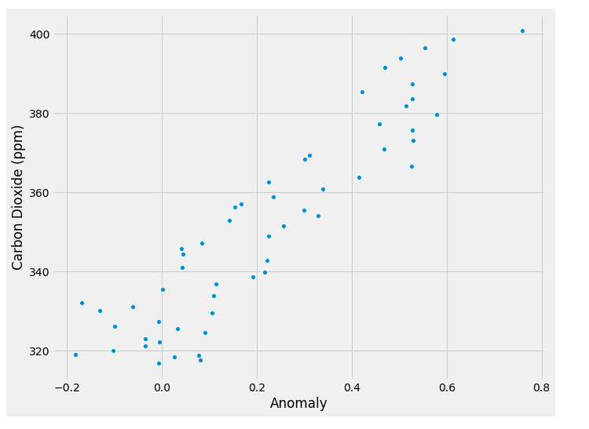

Analizando datos del cambio climático y niveles de CO2 en la atmosfera con Python y pandas.
Posted on Sun 14 October 2018 in Tutorial Python • 8 min read
Continuando con los artículos sobre ciencia de datos, esta vez se analizará datos sobre información del clima global y por países, así como los niveles de CO2.
Estos datos y proyecto los encontré en el sitio kaggle, este sitio es para publicar proyectos de ciencia de datos. Los datos para este artículo lo encuentran en el siguiente enlace.
El código de este artículo se basa en el artículo que se encuentra en kaggle sobre el tema en inglés Climate Change and CO2 levels in atmosphere.
En este artículo se explora los cambios globales de la temperatura media y el incremento de la concentración del CO2 en la atmosfera.
Los datos se obtienen de los siguientes archivos:
- GlobalLandTemperaturesByCountry.csv: Contiene la información de la temperatura por país.
- GlobalTemperatures.csv: Contiene la información global de la temperatura.
- archive.csv: Contiene la información de los niveles de CO2 en la atmosfera.
A continuación se muestra el notebook:
https://www.kaggle.com/derevirn/data-analysis-on-climate-change/notebook https://www.kaggle.com/derevirn/data-analysis-on-climate-change/data
Se importan las librerías de pandas, matplotlib y seaborn.
In [1]:
import pandas as pd
import matplotlib.pyplot as plt
import seaborn as sns
Se crea los dataframes a partir de los archivos csv.
In [2]:
# Se crea el dataframe data_pais, data_vzla, data_global y co2_ppm
data_pais = pd.read_csv("./datos/GlobalLandTemperaturesByCountry.csv")
#Se crea una copia del dataframe obteniendo solo la información de Venezuela.
data_vzla = data_pais[data_pais["Country"] == "Venezuela"].copy()
data_vzla["dt"] = pd.to_datetime(data_vzla["dt"])
#Se crea una copia del dataframe obteniendo solo la información de Argentina.
data_arg = data_pais[data_pais["Country"] == "Argentina"].copy()
data_arg["dt"] = pd.to_datetime(data_arg["dt"])
#Se crea una copia del dataframe obteniendo solo la información de USA.
data_canada = data_pais[data_pais["Country"] == "Canada"].copy()
data_canada["dt"] = pd.to_datetime(data_canada["dt"])
#Se crea una copia del dataframe obteniendo solo la información de Mexico.
data_mexico = data_pais[data_pais["Country"] == "Mexico"].copy()
data_mexico["dt"] = pd.to_datetime(data_mexico["dt"])
#Se crea una copia del dataframe obteniendo solo la información de Brasil.
data_brasil = data_pais[data_pais["Country"] == "Brazil"].copy()
data_brasil["dt"] = pd.to_datetime(data_brasil["dt"])
#Se crea una copia del dataframe obteniendo solo la información de Venezuela.
data_chile = data_pais[data_pais["Country"] == "Chile"].copy()
data_chile["dt"] = pd.to_datetime(data_chile["dt"])
#Se crea el dataframe de la temperatura global.
data_global = pd.read_csv("./datos/GlobalTemperatures.csv")
#Se modifica la fecha y hora como datetime.
data_global["dt"] = pd.to_datetime(data_global["dt"])
#Se crea el dataframe del co2.
co2_ppm = pd.read_csv("./datos/archive.csv")
Los dataframes creados.
In [3]:
data_pais.head()
Out[3]:
| ID | dt | Average Temperature | Average Temperature Uncertainty | Country |
|---|---|---|---|---|
| 0 | 1743-11-01 | 4.384 | 2.294 | Åland |
| 1 | 1743-12-01 | NaN | NaN | Åland |
| 2 | 1744-01-01 | NaN | NaN | Åland |
| 3 | 1744-02-01 | NaN | NaN | Åland |
| 4 | 1744-03-01 | NaN | NaN | Åland |
Como se puede observar, se tiene la fecha, la temperatura promedio, la temperatura promedio de incertidumbre y país. In [4]:
data_pais.info()
<class 'pandas.core.frame.DataFrame'>
RangeIndex: 577462 entries, 0 to 577461
Data columns (total 4 columns):
dt 577462 non-null object
AverageTemperature 544811 non-null float64
AverageTemperatureUncertainty 545550 non-null float64
Country 577462 non-null object
dtypes: float64(2), object(2)
memory usage: 17.6+ MB
Los tipos de datos de las columnas son dt objeto, temperatura promedio y temperatura promedio de incertidumbre son float64 y country como objeto
Venezuela
In [5]:
data_vzla.head()
Out[5]:
| ID | dt | Average Temperature | Average Temperature Uncertainty | Country |
|---|---|---|---|---|
| 562339 | 1824-01-01 | 24.613 | 0.824 | Venezuela |
| 562340 | 1824-02-01 | 24.670 | 2.017 | Venezuela |
| 562341 | 1824-03-01 | 25.527 | 1.065 | Venezuela |
| 562342 | 1824-04-01 | 25.732 | 1.771 | Venezuela |
| 562343 | 1824-05-01 | 24.999 | 1.157 | Venezuela |
Se tiene la misma información anterior pero sólo de Venezuela. In [6]:
data_vzla.describe().T
Out[6]:
| count | mean | std | min | 25% | 50% | 75% | max | |
|---|---|---|---|---|---|---|---|---|
| AverageTemperature | 2086.0 | 25.025686 | 0.703189 | 22.777 | 24.52325 | 24.9825 | 25.49525 | 27.807 |
| AverageTemperatureUncertainty | 2086.0 | 0.586000 | 0.398460 | 0.084 | 0.31000 | 0.4540 | 0.76000 | 4.120 |
Se tienen 2086 datos, los cuales la temperatura promedio es 25.025 grados, y la incertidumbre es de 0.586, la desviación de la temperatura promedio es de 0.703, y de la incertidumbre es de 0.398, la mínima temperatura fue de 22.77, la máxima de 27.807. In [7]:
data_vzla.corr()
Out[7]:
| AverageTemperature | AverageTemperatureUncertainty | |
|---|---|---|
| AverageTemperature | 1.000000 | -0.319882 |
| AverageTemperatureUncertainty | -0.319882 | 1.000000 |
Las dos variables tienen una correlación contraria en cierta manera. Argentina In [8]:
data_arg.head()
Out[8]:
| ID | dt | Average Temperature | Average Temperature Uncertainty | Country |
|---|---|---|---|---|
| 25466 | 1855-05-01 | 10.745 | 1.499 | Argentina |
| 25467 | 1855-06-01 | 6.995 | 2.073 | Argentina |
| 25468 | 1855-07-01 | 6.901 | 1.568 | Argentina |
| 25469 | 1855-08-01 | 9.097 | 1.412 | Argentina |
| 25470 | 1855-09-01 | 11.316 | 1.384 | Argentina |
In [9]:
data_arg.describe().T
Out[9]:
| count | mean | std | min | 25% | 50% | 75% | max | |
|---|---|---|---|---|---|---|---|---|
| AverageTemperature | 1900.0 | 14.621194 | 4.846885 | 4.796 | 10.13225 | 14.6305 | 19.27875 | 23.290 |
| AverageTemperatureUncertainty | 1900.0 | 0.527338 | 0.465652 | 0.083 | 0.20900 | 0.3035 | 0.74525 | 2.974 |
Brasil
In [10]:
data_brasil.head()
Out[10]:
| ID | dt | Average Temperature | Average Temperature Uncertainty | Country |
|---|---|---|---|---|
| 77110 | 1832-01-01 | 24.935 | 1.372 | Brazil |
| 77111 | 1832-02-01 | 24.505 | 1.953 | Brazil |
| 77112 | 1832-03-01 | 24.617 | 1.359 | Brazil |
| 77113 | 1832-04-01 | 23.990 | 2.013 | Brazil |
| 77114 | 1832-05-01 | 23.124 | 1.592 | Brazil |
In [11]:
data_brasil.describe().T
Out[11]:
| count | mean | std | min | 25% | 50% | 75% | max | |
|---|---|---|---|---|---|---|---|---|
| AverageTemperature | 2164.0 | 24.699256 | 0.978787 | 21.797 | 24.02250 | 24.8295 | 25.44975 | 27.151 |
| AverageTemperatureUncertainty | 2164.0 | 0.572940 | 0.411794 | 0.060 | 0.24375 | 0.4160 | 0.84000 | 3.353 |
Chile
In [12]:
data_chile.head()
Out[12]:
| ID | dt | AverageTemperature | AverageTemperatureUncertainty | Country |
|---|---|---|---|---|
| 108248 | 1855-05-01 | 7.152 | 1.296 | Chile |
| 108249 | 1855-06-01 | 4.257 | 1.641 | Chile |
| 108250 | 1855-07-01 | 4.113 | 1.313 | Chile |
| 108251 | 1855-08-01 | 5.508 | 1.168 | Chile |
| 108252 | 1855-09-01 | 6.684 | 1.153 | Chile |
In [13]:
data_chile.describe().T
Out[13]:
| count | mean | std | min | 25% | 50% | 75% | max | |
|---|---|---|---|---|---|---|---|---|
| AverageTemperature | 1900.0 | 9.383474 | 3.179081 | 3.206 | 6.502 | 9.3815 | 12.37775 | 15.493 |
| AverageTemperatureUncertainty | 1900.0 | 0.572654 | 0.418011 | 0.114 | 0.281 | 0.3825 | 0.80300 | 2.408 |
Mexico
In [14]:
data_mexico.head()
Out[14]:
| ID | dt | AverageTemperature | AverageTemperatureUncertainty | Country |
|---|---|---|---|---|
| 338438 | 1835-01-01 | 15.810 | 1.484 | Mexico |
| 338438 | 1835-01-01 | 15.810 | 1.484 | Mexico |
| 338439 | 1835-02-01 | 14.911 | 1.579 | Mexico |
| 338440 | 1835-03-01 | 16.826 | 1.858 | Mexico |
| 338441 | 1835-04-01 | 19.925 | 1.966 | Mexico |
| 338442 | 1835-05-01 | 22.037 | 1.609 | Mexico |
In [15]:
data_mexico.describe().T
Out[15]:
| count | mean | std | min | 25% | 50% | 75% | max | |
|---|---|---|---|---|---|---|---|---|
| AverageTemperature | 2145.0 | 20.567558 | 3.753343 | 12.064 | 17.109 | 21.050 | 24.164 | 26.926 |
| AverageTemperatureUncertainty | 2145.0 | 0.638233 | 0.547605 | 0.091 | 0.226 | 0.398 | 0.970 | 3.699 |
Canadá
In [16]:
data_canada.head()
Out[16]:
| ID | dt | AverageTemperature | AverageTemperatureUncertainty | Country |
|---|---|---|---|---|
| 97255 | 1768-09-01 | 5.257 | 3.107 | Canada |
| 97256 | 1768-10-01 | -3.393 | 2.981 | Canada |
| 97257 | 1768-11-01 | -12.829 | 3.967 | Canada |
| 97258 | 1768-12-01 | -20.582 | 4.622 | Canada |
| 97259 | 1769-01-01 | -24.756 | 4.722 | Canada |
In [17]:
data_canada.describe().T
Out[17]:
| count | mean | std | min | 25% | 50% | 75% | max | |
|---|---|---|---|---|---|---|---|---|
| AverageTemperature | 2504.0 | -5.216659 | 12.878074 | -28.736 | -17.7025 | -4.7285 | 7.41275 | 14.796 |
| AverageTemperatureUncertainty | 2504.0 | 1.256211 | 1.046127 | 0.123 | 0.2870 | 0.8980 | 2.12025 | 5.275 |
Se nota que las variaciones de la temperatura promedio de incertidumbre es mayor en Brasil, Venezuela, Mexico y Canadá en ese orden, con respecto a Chile y Argentina.
Incremento anual de la temperatura promedio global
In [18]:
annual_mean_global = data_global.groupby(data_global["dt"].dt.year).mean()
reference_temperature_global = annual_mean_global.loc[1951:1980].mean()["LandAndOceanAverageTemperature"]
annual_mean_global["Anomaly"] = annual_mean_global["LandAndOceanAverageTemperature"] - reference_temperature_global
In [19]:
plt.figure()
plt.style.use("fivethirtyeight")
annual_mean_global.loc[1960:2015]["Anomaly"].plot(figsize = (10,5), grid=True, legend=True)
plt.title("Anomalia anual de la temperatura promedio global")
plt.xlabel('')
plt.ylabel('Anomalia de la temperatura')
plt.show()

Se nota que anualmente el incremento de la temperatura tiene una tendencia ascendente que ha aumentado en los últimos años, este incremento en el año 2015 fue de 0.75 grados que es consistente con el cambio climático.
Venezuela.
Se hace el mismo cálculo para el caso de Venezuela. In [20]:
annual_mean_vzla = data_vzla.groupby(data_vzla["dt"].dt.year).mean()
reference_temperature_vzla = annual_mean_vzla.loc[1951:1980].mean()["AverageTemperature"]
annual_mean_vzla["Anomaly"] = annual_mean_vzla["AverageTemperature"] - reference_temperature_vzla
In [21]:
annual_mean_vzla.head()
Out[21]:
| dt | AverageTemperature | AverageTemperatureUncertainty | Anomaly |
|---|---|---|---|
| 1824 | 24.896545 | 1.516091 | -0.420966 |
| 1825 | 25.071583 | 1.552083 | -0.245928 |
| 1826 | 24.871900 | 1.440800 | -0.445611 |
| 1827 | 25.156273 | 1.474182 | -0.161238 |
| 1828 | 24.751818 | 1.516727 | -0.565693 |
In [22]:
annual_mean_vzla.tail()
Out[22]:
| dt | AverageTemperature | AverageTemperatureUncertainty | Anomaly |
|---|---|---|---|
| 2009 | 26.084917 | 0.353917 | 0.767406 |
| 2010 | 26.150250 | 0.341333 | 0.832739 |
| 2011 | 25.677333 | 0.336750 | 0.359822 |
| 2012 | 25.688583 | 0.401417 | 0.371072 |
| 2013 | 25.912875 | 0.484500 | 0.595364 |
El último registro es del año 2013, el cual el incremento fue de 0.595 grados, hubo un pico en el año 2010 de 0.8332 grados. In [23]:
plt.figure()
plt.style.use("fivethirtyeight")
annual_mean_vzla.loc[1960:2012]["Anomaly"].plot(figsize = (10,5), grid=True, legend=True)
plt.title("Variación promedio anual de la temperatura de Venezuela")
plt.xlabel('')
plt.ylabel('Incremento de la temperatura')
plt.show()

Argentina
In [24]:
annual_mean_arg = data_arg.groupby(data_arg["dt"].dt.year).mean()
reference_temperature_arg = annual_mean_arg.loc[1951:1980].mean()["AverageTemperature"]
annual_mean_arg["Anomaly"] = annual_mean_arg["AverageTemperature"] - reference_temperature_arg
In [25]:
annual_mean_arg.head()
Out[25]:
| dt | AverageTemperature | AverageTemperatureUncertainty | Anomaly |
|---|---|---|---|
| 1855 | 11.729250 | 1.711875 | -3.090742 |
| 1856 | 13.998750 | 1.553167 | -0.821242 |
| 1857 | 14.221083 | 1.993417 | -0.598908 |
| 1858 | 14.015667 | 1.770750 | -0.804325 |
| 1859 | 14.414583 | 1.635583 | -0.405408 |
In [26]:
annual_mean_arg.tail()
Out[26]:
| dt | AverageTemperature | AverageTemperatureUncertainty | Anomaly |
|---|---|---|---|
| 2009 | 15.534417 | 0.215750 | 0.714425 |
| 2010 | 15.078833 | 0.218917 | 0.258842 |
| 2011 | 15.339667 | 0.219833 | 0.519675 |
| 2012 | 15.689000 | 0.265750 | 0.869008 |
| 2013 | 14.457125 | 0.276500 | -0.362867 |
In [27]:
plt.figure()
plt.style.use("fivethirtyeight")
annual_mean_arg.loc[1960:2012]["Anomaly"].plot(figsize = (10,5), grid=True, legend=True)
plt.title("Variación promedio anual de la temperatura de Argentina")
plt.xlabel('')
plt.ylabel('Incremento de la temperatura')
plt.show()

Para el caso de Argentina la pendiente de la tendencia de incremento de la temperatura es menos pronunciada.
Brasil
In [28]:
annual_mean_brasil = data_brasil.groupby(data_brasil["dt"].dt.year).mean()
reference_temperature_brasil = annual_mean_brasil.loc[1951:1980].mean()["AverageTemperature"]
annual_mean_brasil["Anomaly"] = annual_mean_brasil["AverageTemperature"] - reference_temperature_brasil
In [29]:
annual_mean_brasil.head()
Out[29]:
| dt | AverageTemperature | AverageTemperatureUncertainty | Anomaly |
|---|---|---|---|
| 1832 | 23.858583 | 1.734500 | -1.072247 |
| 1833 | 24.517833 | 1.450083 | -0.412997 |
| 1834 | 24.346750 | 1.498083 | -0.584081 |
| 1835 | 23.537500 | 1.298583 | -1.393331 |
| 1836 | 23.921167 | 1.426083 | -1.009664 |
In [30]:
annual_mean_brasil.tail()
Out[30]:
| dt | AverageTemperature | AverageTemperatureUncertainty | Anomaly |
|:---- | :---------------: | :--------------------------: | :-------: |
| 2009 | 25.600583 | 0.185667 | 0.669753 |
| 2010 | 25.812417 | 0.158000 | 0.881586 |
| 2011 | 25.428917 | 0.204833 | 0.498086 |
| 2012 | 25.717083 | 0.231000 | 0.786253 |
| 2013 | 25.348125 | 0.262250 | 0.417294 |
In [31]:
plt.figure()
plt.style.use("fivethirtyeight")
annual_mean_brasil.loc[1960:2012]["Anomaly"].plot(figsize = (10,5), grid=True, legend=True)
plt.title("Variación promedio anual de la temperatura de Brasil")
plt.xlabel('')
plt.ylabel('Incremento de la temperatura')
plt.show()

En el caso de Brasil se nota un fuerte incremento en la decada de los 90s con un pico de más de 1 grado, luego la tendencia se ha estabilizado en 0.79 grados.
Chile
In [32]:
annual_mean_chile = data_chile.groupby(data_chile["dt"].dt.year).mean()
reference_temperature_chile = annual_mean_chile.loc[1951:1980].mean()["AverageTemperature"]
annual_mean_chile["Anomaly"] = annual_mean_chile["AverageTemperature"] - reference_temperature_chile
In [33]:
annual_mean_chile.head()
Out[33]:
| dt | AverageTemperature | AverageTemperatureUncertainty | Anomaly |
|---|---|---|---|
| 1855 | 7.070125 | 1.424125 | -2.510742 |
| 1856 | 8.664083 | 1.319250 | -0.916783 |
| 1857 | 8.645917 | 1.439250 | -0.934950 |
| 1858 | 8.810250 | 1.428333 | -0.770617 |
| 1859 | 9.245583 | 1.376917 | -0.335283 |
In [34]:
annual_mean_chile.tail()
Out[34]:
| dt | AverageTemperature | AverageTemperatureUncertainty | Anomaly |
|---|---|---|---|
| 2009 | 9.994417 | 0.281917 | 0.413550 |
| 2010 | 9.712833 | 0.340000 | 0.131967 |
| 2011 | 10.032250 | 0.322250 | 0.451383 |
| 2012 | 10.272583 | 0.384583 | 0.691717 |
| 2013 | 9.877375 | 0.393875 | 0.296508 |
In [35]:
plt.figure()
plt.style.use("fivethirtyeight")
annual_mean_chile.loc[1960:2012]["Anomaly"].plot(figsize = (10,5), grid=True, legend=True)
plt.title("Variación promedio anual de la temperatura de Chile")
plt.xlabel('')
plt.ylabel('Incremento de la temperatura')
plt.show()

La variación no supera el 0.8 grados de temperatura, con un aumento fuerte entre los 70s y 80s y luego un pico en los 90s.
Mexico
In [36]:
annual_mean_mexico = data_mexico.groupby(data_mexico["dt"].dt.year).mean()
reference_temperature_mexico = annual_mean_mexico.loc[1951:1980].mean()["AverageTemperature"]
annual_mean_mexico["Anomaly"] = annual_mean_mexico["AverageTemperature"] - reference_temperature_mexico
In [37]:
annual_mean_mexico.head()
Out[37]:
| dt | AverageTemperature | AverageTemperatureUncertainty | Anomaly |
|---|---|---|---|
| 1835 | 18.993250 | 1.684083 | -1.745911 |
| 1836 | 19.587167 | 1.695333 | -1.151994 |
| 1837 | 19.671083 | 1.647667 | -1.068078 |
| 1838 | 19.337000 | 1.862417 | -1.402161 |
| 1839 | 19.785833 | 1.603000 | -0.953328 |
In [38]:
annual_mean_mexico.tail()
Out[38]:
| dt | AverageTemperature | AverageTemperatureUncertainty | Anomaly |
|---|---|---|---|
| 2009 | 21.546083 | 0.205917 | 0.806922 |
| 2010 | 20.852917 | 0.217750 | 0.113756 |
| 2011 | 21.599333 | 0.245333 | 0.860172 |
| 2012 | 21.652417 | 0.324500 | 0.913256 |
| 2013 | 22.219222 | 0.365111 | 1.480061 |
In [39]:
plt.figure()
plt.style.use("fivethirtyeight")
annual_mean_mexico.loc[1960:2012]["Anomaly"].plot(figsize = (10,5), grid=True, legend=True)
plt.title("Variación promedio anual de la temperatura de Mexico")
plt.xlabel('')
plt.ylabel('Incremento de la temperatura')
plt.show()

Se nota la tendencia al alsa de la temperatura en Mexico pasando el año 2013 a estar por 1.48 grados por encima del promedio.
Canadá
In [40]:
annual_mean_canada = data_canada.groupby(data_canada["dt"].dt.year).mean()
reference_temperature_canada = annual_mean_canada.loc[1951:1980].mean()["AverageTemperature"]
annual_mean_canada["Anomaly"] = annual_mean_canada["AverageTemperature"] - reference_temperature_canada
In [41]:
annual_mean_canada.head()
Out[41]:
| dt | AverageTemperature | AverageTemperatureUncertainty | Anomaly |
|---|---|---|---|
| 1768 | -7.886750 | 3.66925 | -2.969253 |
| 1769 | -3.427875 | 3.50550 | 1.489622 |
| 1770 | NaN | NaN | NaN |
| 1771 | NaN | NaN | NaN |
| 1772 | NaN | NaN | NaN |
In [42]:
annual_mean_canada.tail()
Out[42]:
| dt | AverageTemperature | AverageTemperatureUncertainty | Anomaly |
|---|---|---|---|
| 2009 | -4.135083 | 0.231833 | 0.782414 |
| 2010 | -1.887917 | 0.218583 | 3.029581 |
| 2011 | -3.557083 | 0.232583 | 1.360414 |
| 2012 | -3.176833 | 0.300083 | 1.740664 |
| 2013 | -1.640667 | 0.533667 | 3.276831 |
In [43]:
plt.figure()
plt.style.use("fivethirtyeight")
annual_mean_canada.loc[1960:2012]["Anomaly"].plot(figsize = (10,5), grid=True, legend=True)
plt.title("Variación promedio anual de la temperatura de Canadá")
plt.xlabel('')
plt.ylabel('Incremento de la temperatura')
plt.show()

Se nota la tendencia al alsa de la temperatura en Canadá y lo preocupante es que la variación pase los 3 grados de temperatura en el año 2013.
Niveles anuales de CO2 en la Atmosfera
In [44]:
plt.figure()
plt.style.use("fivethirtyeight")
annual_co2_ppm = co2_ppm.groupby(co2_ppm["Year"]).mean()
annual_co2_ppm.loc[1960:2015]["Carbon Dioxide (ppm)"].plot(figsize = (10,5), grid=True, legend=True)
plt.title("Nivel anual global de CO2 en la Atmosfera")
plt.ylabel("CO2 partes por millón")
plt.show()

Se nota el incremento anual con tendencia al alza.
Se cálcula la relación del CO2 con la temperatura.
In [45]:
annual_co2_temp = pd.merge(annual_mean_global.loc[1960:2015], annual_co2_ppm.loc[1960:2015], left_index=True, right_index=True)
annual_co2_temp = annual_co2_temp[["LandAndOceanAverageTemperature", "Anomaly", "Carbon Dioxide (ppm)"]].copy()
annual_co2_temp.corr()
Out[45]:
| LandAndOceanAverageTemperature | Anomaly | Carbon Dioxide (ppm) | |
|---|---|---|---|
| LandAndOceanAverageTemperature | 1.000000 | 1.000000 | 0.923603 |
| Anomaly | 1.000000 | 1.000000 | 0.923603 |
| Carbon Dioxide (ppm) | 0.923603 | 0.923603 | 1.000000 |
In [46]:
sns.heatmap(annual_co2_temp.corr())
Out[46]:
<matplotlib.axes._subplots.AxesSubplot at 0x7fcacea9cdd8>

In [47]:
plt.figure(figsize=(10,8))
sns.scatterplot(x="Anomaly",y="Carbon Dioxide (ppm)", data=annual_co2_temp)

Out[47]:
<matplotlib.axes._subplots.AxesSubplot at 0x7fcace8d6c50>
Con la gráfica de calor y la scatter, se nota la relación practicamente lineal del incremento de la temperatura y del Dioxido de Carbono. Ambas están relacionadas en el Cambio climático. In [ ]:
En el sitio donde se almacenan los datos hay más archivos, temperatura por ciudad por ejemplo para ir más a detalle de la situación por ciudad. También pueden seguir buscando info de otros países, en el artículo original se hizo el de Grecia, y acá probé con Argentina, Brasil, Chile, Canadá, México y Venezuela.
¡Haz tu donativo! Si te gustó el artículo puedes realizar un donativo con Bitcoin (BTC) usando la billetera digital de tu preferencia a la siguiente dirección: 17MtNybhdkA9GV3UNS6BTwPcuhjXoPrSzV
O Escaneando el código QR desde la billetera: